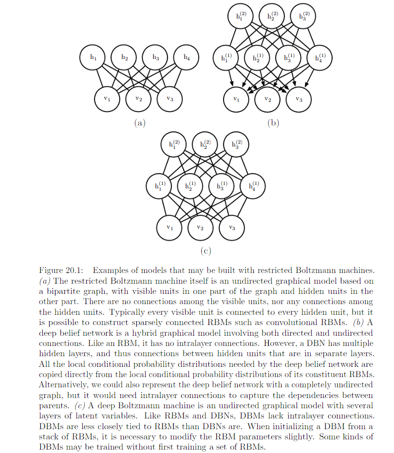

20.2 Restricted Boltzmann Machines¶
RBMs are undirected probabilistic graphical models containing a layer of observable variables and a single layer of latent variables. RBMs maybe stacked to form deeper models.
- Observed layer : vector v with \(n_v\) binary random variables.
- Latent layer : vector h with \(n_h\) binary random variables.
Review on 16.7.1
With the graph above, we can see that there is no triangle clique. So each edge forms 1 clique and its factor function of clique \(\{v_i, h_j\}\) would look like this:
That is why the factor function with the graph as a whole looks like:
Intractable partition function Z => P(v) intractable to evaluate.
20.2.1 Conditional Distribution¶
Since we are conditioning on the visible units v, we can treat these as constant with respect to the distribution P(h|v).
Now review on rule 3.25 we have: \(1- \sigma{x} = \sigma{-x}\).
So now we have:
A similar deviation could be
Because RBM admits efficient evaluation and differentiation of \(\hat{P}(v)\) and efficient MCMC sampling in the form of block Gibbs sampling, it can readily be trained with any of the techniques described in Chapter 18 for training models that have intractable partition functions. This include
- CD
- SML
- Ratio Matching
- and so on
Review :
Gibbs Sampling
Draw sample from distribution q(x): updating \(x \leftarrow x' \sim T(x'|x)\)
Problem: how to ensure that q(x) is a useful distribution
Solution:
- Derive T from a goven learned model \(p_{model}\)
- Directly parameterize T and learn it, so that its stationary distribution implicitely define the \(p_{model}\) of interest.
In DL, we commonly use Markov chain to draw samples from an energy-based model defining a distribution \(p_{model}(\vec{x})\). In this case, we want the \(q(\vec{x})\) for the Markov chain to be \(p_{model}(\vec{x})\). To obtain the desired q(x), we must choose an appropriate \(T(x'|x)\)
Gibbs sampling: sampling from \(T(x'|x)\) is accomplished by selecting one variable \(x_i\) and sample it from \(p_{model}\) conditioned on it neighbor in the undirected graph G defining the structure of the energy based model. We can also sample several variables at the same time as long as they are conditionally independent given all their neighbors.
Contrastive Divergence (CD)

Stachastic Maximum Likehood (SML) or Persistent Contrastive Divergence (PCD)